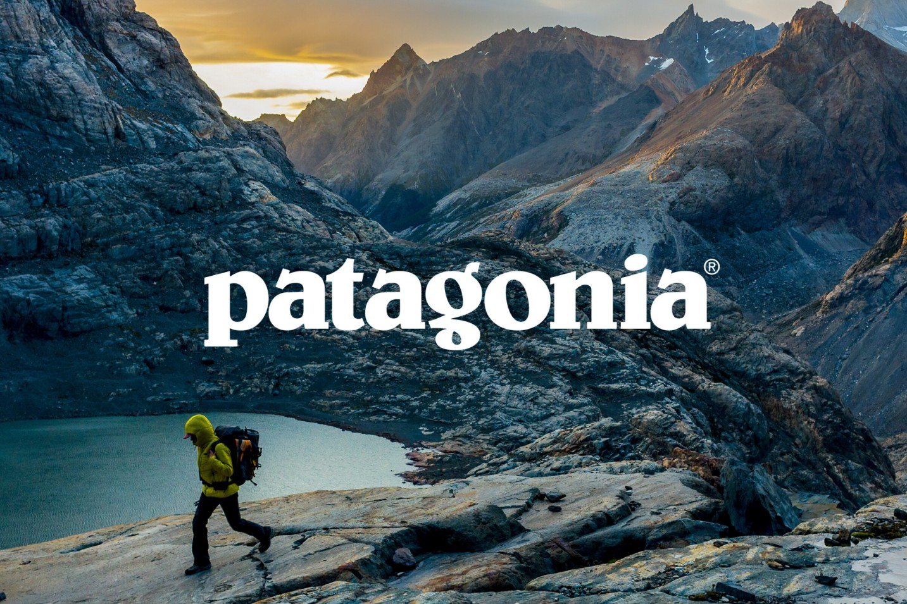
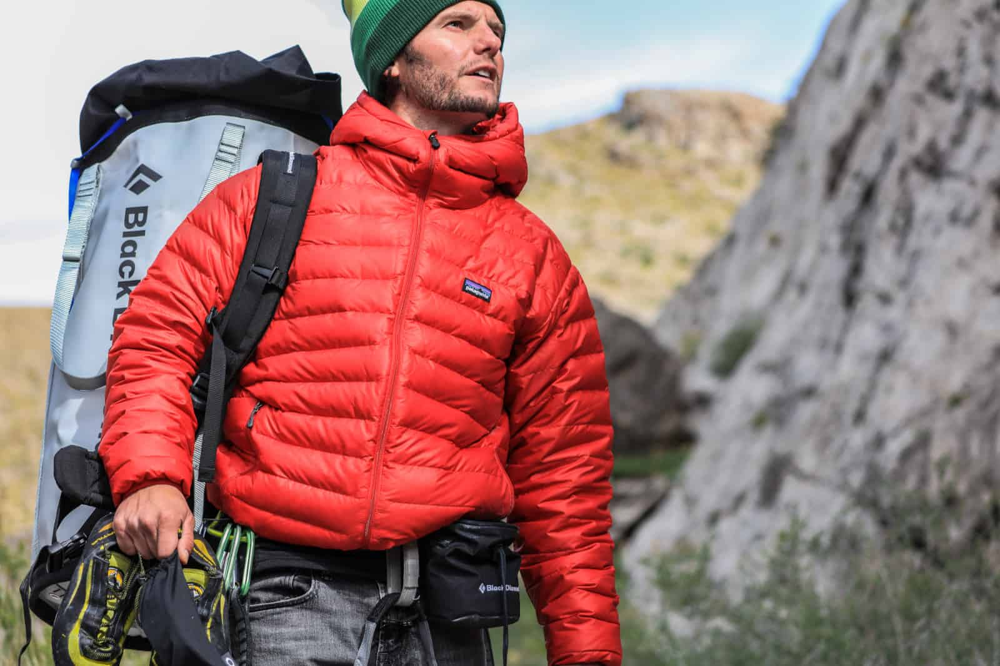

| Company Feature of the Month: Patagonia | ||
|  |
Based in California, Patagonia is a Certified B Corp and Fair Trade Certified Company.
All of their products consist of organic cotton and recycled materials. They are known for their
giveback program, their environmental sustainability initiatives and their unique secondhand shop.
Patagonia specializes in outdoor clothing, activewear and swimwear for Adults and children.
|
|
| Patagonia was one of the first companies to put environmental ethics at the forefront of their values. They also were one of the first companies to use recycled materials and make the jump to organic cotton. As a company they are deeply committed to labor ethics and prefer to work out of US factories when possible. They have factories in states such as Texas and North Carolina. Their continued commitment has shined a much needed light on the necessity for companies to make a positive impact and serves as the gold standard for fair trade and fair trade factories worldwide. |
 |
|